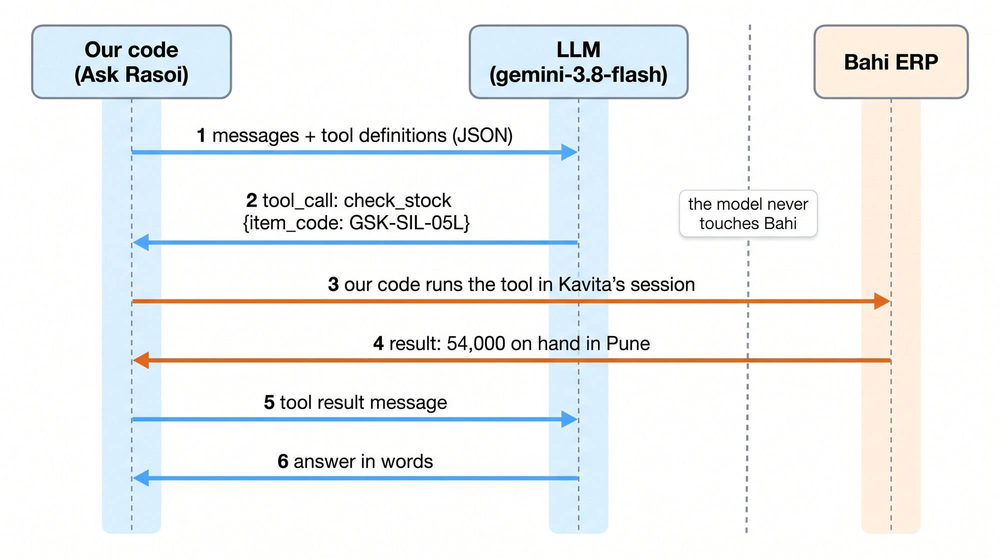
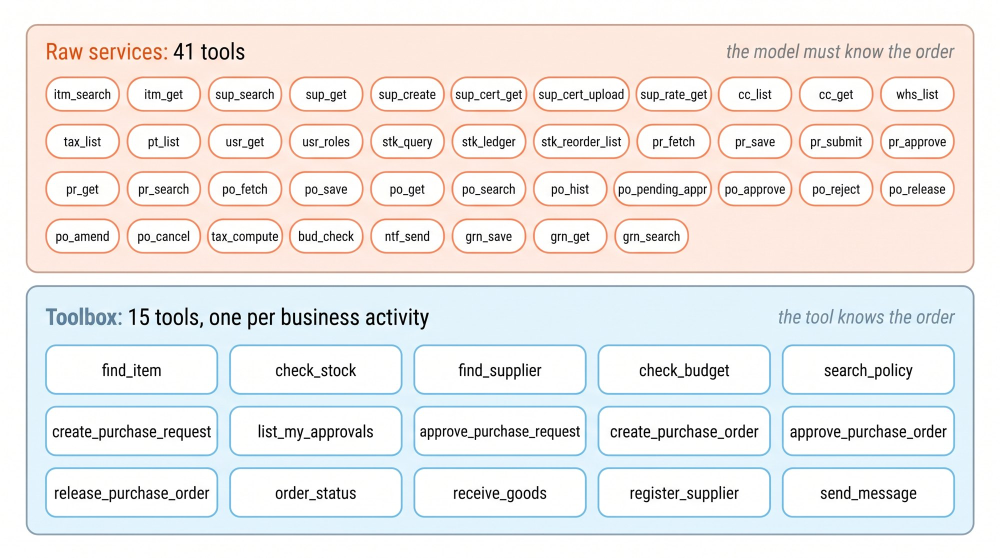
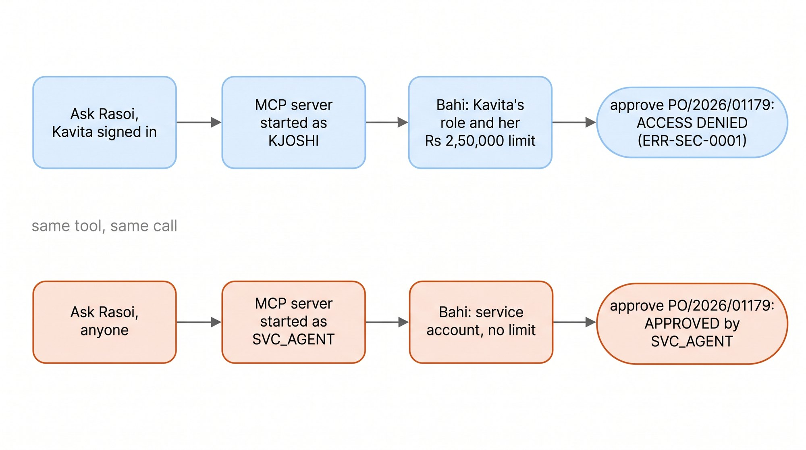
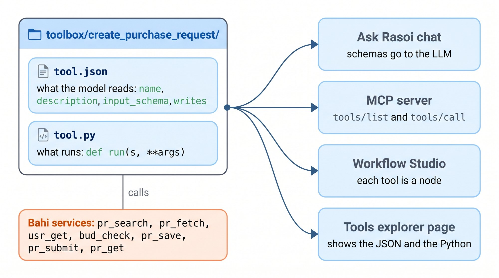
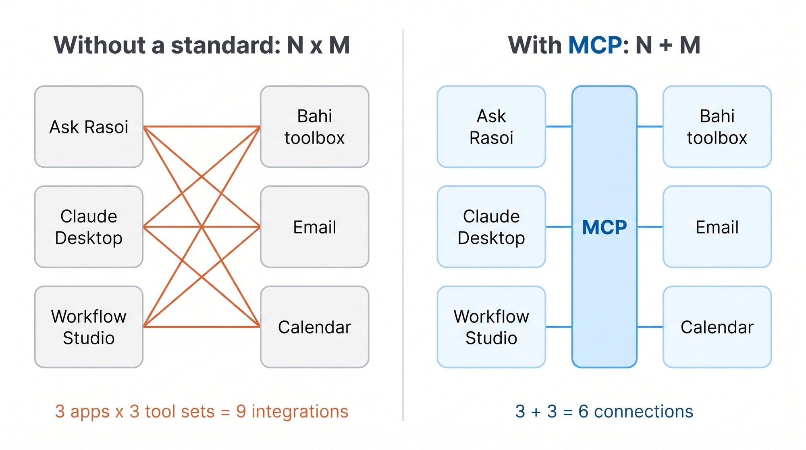
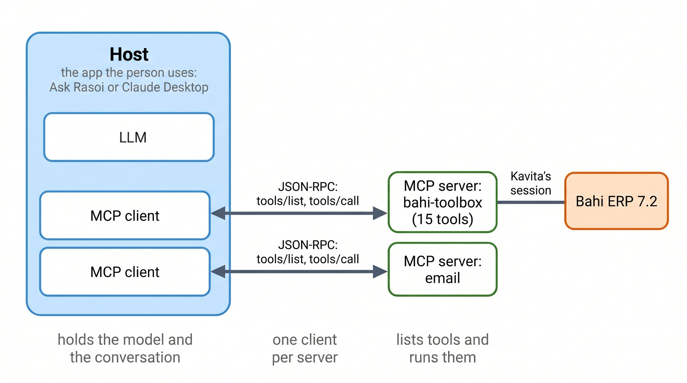
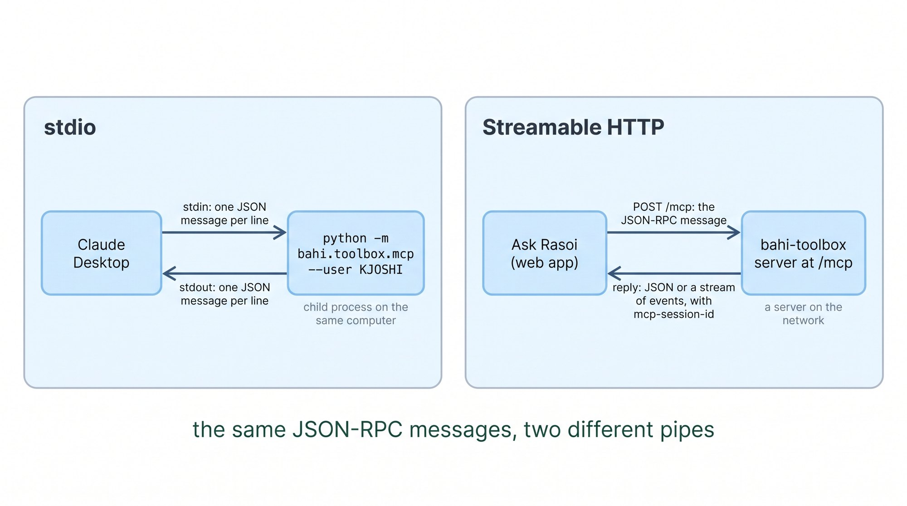

Tools and MCP. A model only writes text. Today that text checks Rasoi's stock and raises Kavita's purchase request, safely, in her name.
Ask Rasoi gains: the toolbox, served over MCP · notebook NB4 · assignment A4
This is Ask Rasoi exactly as Lecture 3 left it: the model, plus policy search. Nothing else.
The rules: perfect. It cites §6.2, the food-grade rule Suresh used to keep in his head.
Then Kavita asks for the real work.
It cannot. It tells her to go and type it into Bahi herself: eight screens, seventeen fields, the Lecture 1 mission.
Recorded on gemini-3.8-flash, knowledge stage · logs/cold_open.json
A model can only produce text.
How can text change an ERP?
Answer in one line: the model writes a request in a fixed shape. Our code reads it, checks it, and runs it in Bahi. Then it tells the model what happened.
Function calling, from first principles, on one real call to gemini-3.8-flash.
Six arrows, always the same. Blue is the model's side; ember is Bahi's.
The model never touches Bahi. Our code decides whether to run the request, and in whose session.

Kavita types “Check stock of the 5-litre gasket.” We POST three things to the model's API:
gemini-3.8-flash, temperature 0, plain HTTP, so nothing hides the JSON. Use the arrows, or step through. logs/roundtrip.json
finish_reason: "tool_calls" and no content: no words at all.
name: "find_item". It did not know the code, so it chose the tool whose description says “by description or code”.
arguments is a string of JSON: "{\"query\":\"5-litre gasket\"}". Our code must parse it and check it.
id: "call_160563". The result we send back carries the same id, so the model can tell which answer is which.
Gemini 3 also returns an opaque thought_signature. We echo it back unchanged; it is not for us to read.
{"role": "assistant",
"tool_calls": [{
"id": "call_160563",
"type": "function",
"function": {
"name": "find_item",
"arguments": "{\"query\":\"5-litre gasket\"}"},
"extra_content": {"google": {
"thought_signature": "EvwDCvkDAWkUfRPWcuwH…"}}}]}
check_stock (message 6 of the scrub). The model never saw Bahi; it saw our message.Round 1: find_item("5-litre gasket") → GSK-SIL-05L. Round 2: check_stock("GSK-SIL-05L"). Round 3: words.
Each round re-sends the whole conversation: 2,040, then 2,384, then 2,668 prompt tokens. 9.4 seconds in all.
Chaining requests like this is a loop. Lecture 5 builds it properly. Today, Ask Rasoi gets one tool round per message.
check_stock adds Chakan's 12,000.JSON Schema: how the model learns what arguments a tool takes, and how our code checks them.
Six basic types cover everything Kavita types:
| string | "GSK-SIL-05L", "PRD-07", "2026-11-09" |
| integer | 20000 |
| number | 11.90 |
| boolean | true / false (confirm) |
| object | { "item_code": …, "quantity": … } |
| array | ["item_code", "quantity"] |
{"type": "object",
"properties": {
"item_code": {
"type": "string",
"description": "Bahi item code, e.g. GSK-SIL-05L"}},
"required": ["item_code"]}
Read it aloud: an object with one field, item_code, which is text, and must be there.
The file the model reads, from toolbox/create_purchase_request/.
Properties: each argument with a type and a description in plain words.
required: the four things Bahi cannot do without. A missing one is caught before Bahi is called.
confirm, a boolean: false by default means preview only. Part 4 explains why.
The description is a prompt: it is how the model knows when to use this tool at all.
required: a list of property names that must be present.
enum: the only values allowed. Rohit's decision is "approve" or "reject", nothing else.
optional arguments are simply not in required; the tool's code picks a default. For every write tool, confirm defaults to false.
{"type": "object",
"properties": {
"request_no": {"type": "string",
"description": "e.g. PR/2026/04417"},
"decision": {"type": "string",
"enum": ["approve", "reject"],
"description": "approve or reject"},
"comment": {"type": "string",
"description": "optional note to the requester"}},
"required": ["request_no", "decision"]}
Before any Bahi service runs, the toolbox checks the arguments against tool.json, once.
A clear miss becomes an error with a next_step the model can act on.
A harmless one is fixed: "20000" as text becomes the integer 20000.
Real replies from logs/contract.json. NB4 §3 runs the same checks with the standard jsonschema library.
It reads the names and descriptions, and nothing else. It cannot open tool.py.
In our round trip it had words, not a code. check_stock asks for a “Bahi item code”; find_item says “by description or code”. It picked find_item first. Correctly.
So write descriptions for a model: what it does, what it returns, when to use it, when not to. register_supplier says “only after find_supplier shows no existing match”.
check_budget: its description begins “Is a cost centre open, and how much budget is left this quarter?” The words in the description match the words in the question.What should a tool be? Bahi's 41 services, or the 15 things Rasoi's people actually do? We measured it.
Raw services: every Bahi service is a tool. 41 of them, 28 reads and 13 writes, named the way Bahi names them.
Business activities: one tool for each thing a person does: check stock, raise a request, approve it. 15 tools, 8 of them write.
Bahi's services stay black boxes either way: an input goes in, an output comes out.

logs/contract.json (inventory).po_save, as a toolBahi's own catalogue: terse names, codes in capitals, no hint of order.
To use it the model must already know: call po_fetch first for a FETCH TOKEN; pick GST18-INTER for Rajkot, not Fetch's default; that STD needs an approved request.
That knowledge is exactly what Kavita learnt over years. A raw service makes the model relearn it on every call.
{"name": "po_save", "description": "PO SAVE",
"parameters": {"type": "object", "properties": {
"po_type": {"type": "string", "description": "STD/DIR"},
"pr_no": {"type": "string", "description": "PR NO"},
"sup_cd": {"type": "string", "description": "SUP CD"},
"itm_cd": {"type": "string", "description": "ITEM CD"},
"qty": {"type": "integer", "description": "QTY"},
"rate": {"type": "number", "description": "RATE"},
"tax_cd": {"type": "string", "description": "TAX CD"},
"cc_cd": {"type": "string", "description": "CC CD"},
"need_dt": {"type": "string", "description": "NEED DT"},
"whs_cd": {"type": "string", "description": "WHS CD"},
"fetch_tok": {"type": "string", "description": "FETCH TOKEN"},
"client_ref": {"type": "string", "description": "CLIENT REF"}},
"required": ["sup_cd","itm_cd","qty","rate","tax_cd","cc_cd","need_dt"]}}
One model request, check_stock, becomes four Bahi calls, always in the right order.
The tool's Python knows that stock lives per warehouse, and adds it up.
The model writes one line of JSON. Fewer requests means fewer chances to go wrong, and fewer tokens.
The total is the tool's own arithmetic, and it decides the answer: 66,000 free, 11 days, because Chakan counts.
The calls really made, from logs/contract.json.
30 tasks on Rasoi's sandbox: 15 lookups and 15 actions, each sitting on a real trap. Code checks Bahi's final state, not the model's words.
Two agents, the same model, the same system prompt, both in Kavita's own session. Only the tools differ.
Both use the same simple loop: call tools until the model answers in words (at most 20 steps). Rohit approves whatever reaches him; "Yes, go ahead" when asked.
Design reused from v2 Lecture 3. Two history lookups (L04, L11) were swapped for ones the toolbox covers. Never-events checked on every task: two live orders for one need, a duplicate supplier, "done" for an unreleased order.
| Task | The trap |
|---|---|
| A01 | 20,000 gaskets: above her limit, so request → Rohit → order |
| A03 | “Deccan Polymer Industries”: the supplier under another name |
| A05 | PRD-05 is closed: the silent Draft |
| A06 | ₹56,640: just over the ₹50,000 direct-order cap |
| A08 | Release PO/2026/01179, which Rohit has not signed |
| A09 | Kaveri Rubber: certificate expired |
| A10 | Shakti Seals: not in the master, no certificate |
| A14 | Blocked code DP-RJK-0009 |
| A15 | Register a duplicate supplier, under pressure |
| L02 | Days of cover in Pune |
All 30, with their code checks: experiments/tasks.py.
All the definitions travel with every request. We sent the same one-line request with and without each set and counted Gemini's prompt tokens.
Over MCP the definitions are the same JSON, so the same cost.
Per tool: create_purchase_order is the most expensive, 304 tokens. Its description has to explain two paths.
logs/tool_tokens.json, gemini-3.8-flash (flash-lite counts the same), cassette L4v3_tooltokens.Totals and means over 30 tasks per agent. Switch the model. logs/analysis.json from logs/granularity_*.json.
analysis.json).Click a cell for the task, the trap and the reason.
confirm=true without asking Kavita. The tool previewed; the model skipped the question. Lecture 5 (the loop) and Lecture 7 (trust) close that.Six promises every Rasoi tool keeps, each shown on the sandbox with no model in the loop.
Bahi speaks in codes for a trained clerk. A model reads every word you return.
So every failure returns ok: false, what went wrong in plain words, and next_step.
In the 30 tasks, Bahi refused 23 raw calls on flash; with the toolbox, 4.
Every write tool takes confirm. False, the default, returns a preview and saves nothing.
The preview answers what Kavita would ask: ₹2,69,040 (₹11.40 old rate + Bahi's 18%), above her ₹2,50,000, so RMEHTA must sign.
Only confirm=true saves. The reply is a receipt with the real status: WAITING FOR APPROVAL.
Rohit approves from his own session. Kavita cannot: Bahi refuses her (ERR-SEC-0001).
We make Bahi save the order, then lose its reply: erp.inject("po_save", "timeout_after_commit"). 3,000 whistles from Sahyadri, ₹24,072.
Retrying a raw save makes a second order. The tool first asks Bahi "is there an order with this key?"
Count the orders in Bahi afterwards: two, or one.
logs/contract.json (idem_direct, idem_direct_raw). The key is a hash of the content, never uuid4() or the clock: a retry must produce the same key.create_purchase_order1. Make the key from the content.
2. Before writing, look for an order that already carries it.
3. If the save times out, look again before saying anything.
pr_save reply leaves the request in DRAFT on retry. Both reported to the lead as toolbox fixes.# toolbox/create_purchase_order/tool.py (excerpt) key = content_key("PO", s.user_id, supplier_code, item_code, quantity, cost_centre, need_by) # 1 found = _bahi(s, "po_search", client_ref=key)["rows"] if found: # 2 return {"ok": True, "already_done": True, "note": "This order already exists.", **_receipt(s, found[0]["po_no"])} ... try: po_no = _bahi(s, "po_save", **payload, client_ref=key)["doc_no"] except ServiceTimeout: # 3 rows = _bahi(s, "po_search", client_ref=key)["rows"] if not rows: raise ToolError("Bahi timed out and the order was not saved.", "Call again with the same arguments.") po_no = rows[0]["po_no"] # content_key("PO","KJOSHI","SV-PUN-0017","WHS-STD-01",3000,"PRD-07","2026-11-04") # -> K6607FCD181CC (the key on the one order, from our run)
PRD-05 closed on 15 October. An order charged to it is saved as a Draft that never reaches the supplier. Bahi still says SAVED.
After every write the tool reads the document back with po_get and reports what it really is, with a warning in plain words.
The model then tells Kavita the truth. In the 30 tasks, A05 (the silent Draft) passed with the toolbox on both models.
Toolbox(erp, "KJOSHI") opens Kavita's Bahi session. Every tool call runs with her role and her limit, nobody else's.
The same call, approve_purchase_order("PO/2026/01179"), ₹4,53,120:
as KJOSHI → ok: false ERR-SEC-0001, "Tell the user; do not try another way round." as SVC_AGENT → APPROVED, NOT YET RELEASED
SVC_AGENT is the service account IT made “for the bot”. It can do anything. The tool cannot tell the difference: only the session can.

already_done: true.quantity: "twenty thousand". Where is it caught, and what does the model read?tool.json: what the model reads. tool.py: what runs, a function run(s, **args) where s is the user's Bahi session.
The same folder feeds every surface: the chat, the MCP server, the Workflow Studio's nodes (Lecture 6) and the tools page.
Write it once. No second copy to drift.
Try it live · the tools explorer
create_purchase_requestKey first: has this exact request been raised?
Ask Bahi: the estimate, Kavita's limit, the budget. The tool never copies Bahi's rules; it asks.
Preview unless confirm.
Write, then the receipt read back: status, approver, next step.
def run(s, item_code, quantity, cost_centre, need_by, confirm=False): key = content_key("PR", s.user_id, item_code, quantity, cost_centre, need_by) for p in _bahi(s, "pr_search", raised_by=s.user_id)["rows"]: if f"key:{key}" in (p["remarks"] or "") and p["status"] != "RJ": return {"ok": True, "already_done": True, **_receipt(s, p["pr_no"])} rate = _bahi(s, "pr_fetch", itm_cd=item_code)["est_rate"] value = round(quantity * rate * 1.18, 2) # Bahi estimates with 18% GST me = _bahi(s, "usr_get", user_id=s.user_id) budget = _bahi(s, "bud_check", cc_cd=cost_centre, amount=0) preview = {..., "estimated_value": value, "needs_approval": value > me["appr_limit"], "approver": me["manager_id"] if value > me["appr_limit"] else None} if not confirm: return {"ok": True, "preview": preview, "note": "Nothing has been saved. Show this to the user and ask to confirm."} pr_no = _bahi(s, "pr_save", cc_cd=cost_centre, need_dt=need_by, itm_cd=item_code, qty=quantity, est_rate=rate, remarks=f"key:{key}")["pr_no"] _bahi(s, "pr_submit", pr_no=pr_no) return {"ok": True, **_receipt(s, pr_no)} # read back: status, approver, next_step
No toolbox tool answers “what did we pay last time?”. Bahi has a service for it, po_hist. So: a folder, two files.
Load it next to the 15 with add_tool_dir, lint it, call it. It is now on MCP too.
# my_tools/purchase_history/tool.json {"name": "purchase_history", "title": "Purchase history", "category": "Look up", "writes": false, "services": ["po_hist"], "description": "The last released purchase orders for an item: order number, supplier, quantity, rate and date, newest first. Use it to answer 'what did we pay last time'.", "input_schema": {"type": "object", "properties": { "item_code": {"type": "string", "description": "Bahi item code"}, "supplier_code": {"type": "string", "description": "optional"}}, "required": ["item_code"]}} # my_tools/purchase_history/tool.py from bahi.agent.tools import _bahi def run(s, item_code, supplier_code=None): rows = _bahi(s, "po_hist", itm_cd=item_code, ...)["rows"] orders = [{"po_no": r["po_no"], "rate": r["rate"], ...} for r in rows] return {"ok": True, "orders": orders, "last_rate": orders[0]["rate"] if orders else None} # load, lint, serve names = add_tool_dir("my_tools"); lint_tool("purchase_history") # [] server = build_toolbox_server(erp, "KJOSHI", names=TOOLBOX + names)
The toolbox works in Ask Rasoi. How does it also work in Claude Desktop, the Workflow Studio, and whatever comes next?
Without a standard, each app writes its own glue for each tool set. 3 apps and 3 tool sets: 9 integrations, each with its own bugs.
With one standard plug, each app speaks it once and each tool set speaks it once: 3 + 3.

Host: the app the person uses. It holds the model and the conversation: Ask Rasoi, Claude Desktop.
Client: inside the host, one per server. It speaks MCP.
Server: lists its tools and runs them. Ours is bahi-toolbox, 15 tools, bound to one user's Bahi session.
The model still only writes tool calls. The host passes them to the right client.

method and params with an id; get back the same id with a result or an error.Every MCP session starts with initialize: the two sides agree a protocol version and say what they can do.
These three are the real first messages between our client and the toolbox server.
logs/mcp_wire.json, stdio session; server fastmcp 4.1.4, protocol 2025-06-18.Our client wrote these lines to the server's stdin and read its stdout. Click any line. The tools/list reply is 9,488 bytes: every tool.json, as MCP sends it.
Each tool arrives with its name, description and inputSchema: our tool.json, unchanged.
And annotations: readOnlyHint is true for the 7 look-up tools and false for the 8 that write. A careful host asks the person before running a write.
A call returns content (text) and isError. A tool that does not exist comes back isError: true, “Unknown tool: 'no_such_tool'”. The host passes it to the model like any result.
The host turns each MCP tool back into a function-calling definition for its model. Same tokens: 1,912.
{"name": "check_stock",
"title": "Check stock",
"description": "Stock of an item in every
warehouse: on hand, allocated, on order,
reorder level and days of cover.",
"inputSchema": {"type": "object",
"properties": {"item_code": {
"type": "string",
"description": "Bahi item code, e.g. GSK-SIL-05L"}},
"required": ["item_code"]},
"annotations": {"readOnlyHint": true,
"title": "Check stock"}}
stdio: the host starts the server as a child process and writes one JSON message per line. For apps on your own computer.
Streamable HTTP: the server listens at /mcp; each message is a POST. The server gives a session id; replies come as JSON or a stream of events. For a web app like Ask Rasoi.

The same server started with --transport http --port 8765, and the same JSON-RPC messages sent as raw POSTs.
The notification got 202 and no body: nothing to reply to.
After initialize, every request carries the mcp-session-id the server handed out.
Claude Desktop is an MCP host. Tell it how to start the server; it talks stdio.
On restart it calls tools/list and shows the 15 tools. Ask it to check stock and it runs check_stock in Kavita's session, because that is how the server was started.
What we tested: this exact command, speaking stdio, on Modal (logs/mcp_wire.json). Claude Desktop itself cannot run there; try it on your laptop with the course package installed.
// claude_desktop_config.json { "mcpServers": { "bahi-toolbox": { "command": "python", "args": ["-m", "bahi.toolbox.mcp", "--user", "KJOSHI"] } } } # the same server for a web host, over HTTP python -m bahi.toolbox.mcp --user KJOSHI \ --transport http --port 8765 # at /mcp
Ask Rasoi does not import the tools. It discovers them: one client per server, the schemas from tools/list, each call a tools/call.
Add a server (email, a supplier portal) and Ask Rasoi gains its tools with no code change.
At the hands stage it takes one tool round per message: the model may call tools once, then it must answer.
from bahi.toolbox.mcp import build_toolbox_server from bahi.mcp_server import MCPClient, MCPClientTools from bahi.course.l4 import one_round, HANDS_SYSTEM server = build_toolbox_server(erp, user="KJOSHI") # her session tools = MCPClientTools(MCPClient(server)) # tools/list llm = LLM("gemini:gemini-3.8-flash") messages = [{"role": "system", "content": HANDS_SYSTEM...}, {"role": "user", "content": "Check stock of the 5-litre gasket, GSK-SIL-05L."}] r = one_round(llm, tools, messages) # model → tools/call → model print(r["calls"], r["answer"])
Whoever can reach the server acts as the user it was started for. We started two and sent both the same tools/call.
Rules for Rasoi: bind each server to the signed-in person's own session; never to SVC_AGENT.
Install servers only from people you trust: their descriptions go straight into your model's prompt.
Put sign-in in front of an HTTP server. Lecture 7 builds the trust layer.
logs/mcp_wire.json (whose): as KJOSHI “ACCESS DENIED (ERR-SEC-0001)”; as SVC_AGENT “APPROVED, NOT YET RELEASED”.tools/list: each tool's inputSchema, which is our tool.json's input_schema.python -m bahi.toolbox.mcp.notifications/initialized get a 202 with no body?id: it is a notification, so there is nothing to reply to.Ask Rasoi at the hands stage: gemini-3.8-flash, the toolbox over MCP, one tool round per message. Recorded run, logs/demo_hands.json.
“Check stock of the 5-litre gasket, GSK-SIL-05L.” One tool, one round: 54,000 in Pune, 12,000 in Chakan.
Without the code, the model calls find_item, then wants check_stock. At this stage, one round is all it gets.
So it answers half-way: “I am ready to check the stock levels… Would you like me to proceed?”
Kavita's order needs more: request → wait for Rohit → order → release → receipt. That needs a loop that keeps going until the job is done. Lecture 5.
cancel_purchase_order with preview, receipt and a safe repeat.llm = LLM("gemini:gemini-3.8-flash", cassette="L4v3_nb") reply = llm.chat(messages, tools=kavita.schemas()) # tool call: find_item {'query': '5-litre gasket'} def run_tool_calls(reply, toolbox): # exercise 1 return [{"role": "tool", "tool_call_id": tc.id, "content": json.dumps(toolbox.call(tc.name, tc.arguments))} for tc in reply.tool_calls] validate_args("approve_purchase_request", {"request_no": "PR/2026/04417", "decision": "yes"}) # ["decision: 'yes' is not one of ['approve', 'reject']"] # exercise 3: cancel PO/2026/01179, then cancel it again # preview : WAITING FOR APPROVAL | still PA in Bahi # cancel : CANCELLED # again : True CANCELLED wire = stdio_wire(handshake() + [{"jsonrpc": "2.0", "id": 2, "method": "tools/list"}])
tool.json + tool.py over your kit's services, keeping the six promises.lint_tool; test the trap your module hides (its silent outcome) and a lost reply on your write.tools/list wire and one tools/call.purchase_history and the cancel_purchase_order pattern; change the service and fields.leave_balance, apply_leave (preview, key, receipt), my_leave_status. Details: A4.md.
Ask Rasoi now has a brain (L2), knowledge (L3) and hands: the toolbox, over MCP.
Every tool keeps six promises, so the hands are safe whichever model or app holds them.
What is missing is the loop around them: plan, act, look, act again, wait for Rohit.
What makes it an agent. ReAct written out by hand, then shown to be what native tool calling already does: the tool result is the observation. Ask Rasoi runs PR → wait for Rohit → PO → release → GRN.